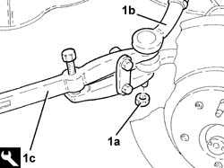
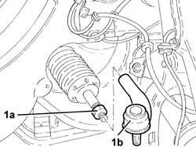

4110B10 STEERING LINKS - R+R ON VEHICLE - CHECK TOW-IN/TOW-OUT SEPARATELY
- Path
- Procedures > 41 STEERING UNIT > 4110 STEERING CONTROL AND LINKAGE > 4110B STEERING CONTROL LINKAGE > 4110B10 STEERING LINKS - R+R ON VEHICLE - CHECK TOW-IN/TOW-OUT SEPARATELY
- Kind
- repair procedure (removal / refitting; the operation number is the code)
- Applies to
- all engines; all production periods
- Interactive page
- https://sloeber94.github.io/elrnDB-aGt/en/#/125001401
Applies to: all engines; all production periods
 Removing
Removing
 Refitting
RefittingPosition the vehicle on the ramp
Proceed with removal
Op. 4450B12 FRONT OR REAR WHEELS (TWO) - R+R
Measure the length of the steering rods to be used for refitting.
1. Undo the nut (1a) and disconnect the track rods (1b) from the steering knuckles usiing the tool (1c).
 | Name | Country |
|---|---|---|
1c | Extractor | 1.821.169.000 |

Applies to: all engines; all production periods
1. Loosen the locknuts (1a) and remove the steering rods (1b).

Applies to: all engines; all production periods
Refitting
RemovingPlace the steering rods back in their housings and tighten them until the length measured at the removal is restored.
Tighten the locknuts fixing the steering rods to the recommended torque.
 | Fastening | Component | Ø | Value (daNm) |
|---|---|---|---|---|
- | Nut | ADJUSTABLE STEERING LINKS | M14 | (Power assisted steering box side) 4.5 ÷ 5.5 |
Connect the steering rods to the front wheel hub steering knuckles and secure them tightening the nuts to the recommended torque.
| Fastening | Component | Ø | Value (daNm) |
|---|---|---|---|---|
- | Nut | ADJUSTABLE STEERING LINKS | M10 | (Front steering knuckle side) 3.2 ÷ 3.9 |
Proceed with refitting
Op. 4450B12 FRONT OR REAR WHEELS (TWO) - R+R.
Remove the car from the ramps.